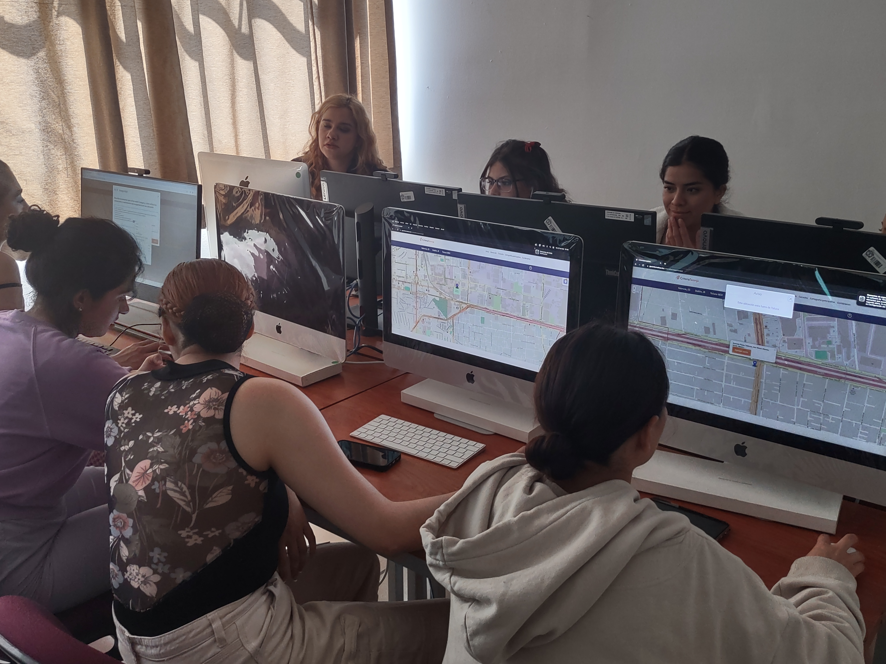
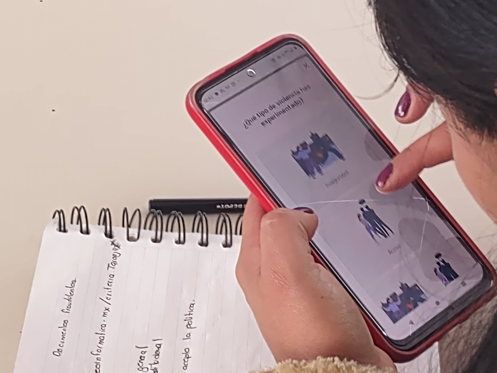
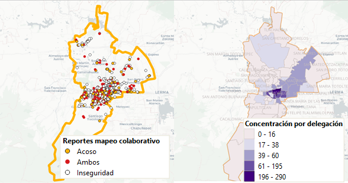

Cartografía participativa
La cartografía participativa es un término usado para definir un conjunto de enfoques y técnicas que combinan las herramientas de la cartografía moderna con métodos participativos para representar el conocimiento que tienen de su espacio comunidades locales.
En este sentido, las personas que participan aportan sus experiencias en la construcción de mapas que representan o visibilizan situaciones o problemáticas en las cuales están inmersos los miembros de dichas comunidades.
Para el caso de esta tesis doctoral, buscamos que las usuarias del espacio público de las ciudades que participan, puedan aportar su experiencia en relación a la percepción de inseguridad y aquellos eventos de acoso callejero, identificando en un mapa los sitios o lugares en donde han experimentado dichas situaciones.
Web mapping
Este término puede ser traducido como cartografía en la web, y hace referencia a todas aquellas aplicaciones informáticas que permiten visualizar, consultar o crear información geográfica en línea. En la tesis doctoral, se ha desarrollado un módulo de cartografía participativa, que posibilita que al acceder al aplicativo web, las usuarias visualicen el mapa de su ciudad, proporcionando herramientas para que a través de un marcador de posición, ubiquen aquellos sitios en los cuales tengan percepción de inseguridad, hayan tenido o presenciado algún evento de acoso callejero, o incluso ambos.
El aplicativo web se ha diseñado pensando en que sea una herramienta intuitiva (similar a la búsqueda en Google maps), y que incluso pueda ser responsiva; esto significa que, aunque funciona en un ordenador o computadora, permite su uso en dispositivos móviles adaptándose o "respondiendo" al tipo y tamaño del dispositivo en donde se usa.
Análisis geoespacial a través de SIG
Los Sistemas de Información Geográfica (SIG) son herramientas informáticas diseñadas para capturar, almacenar, manipular, analizar y mostrar datos geoespaciales (datos que tienen coordenadas x,y), mientras que el análisis espacial es el proceso de examinar y comprender esos datos en términos de su ubicación geográfica.
El análisis espacial, por su parte, aprovecha las capacidades de los SIG para explorar relaciones espaciales, patrones y tendencias dentro de los datos geográficos. En el proyecto de tesis doctoral, las técnicas de análisis espacial se aplicarán para determinar la concentración y distribución de la incidencia tanto de la percepción de inseguridad como los eventos de acoso, dando oportunidad a generar productos cartográficos relacionados con la seguridad ciudadana.